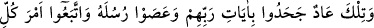
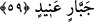

rahmetle kurtardık. Onları ağır bir azabdan kurtuluşa erdirdik.
“Emrimiz” yani azabımız veya azab emrimiz “gelince Hûd’u ve onunla beraber
îmân edenleri” ki onlar dört bin kişiydi “tarafımızdan” bizden kaynaklanan büyük
“bir rahmetle kurtardık.” Yani onları amelleri sebebiyle değil, sırf lütuf ve
rahmetimizden dolayı kurtardık. Çünkü bir kimse ne kadar amel yaparsa yapsın ve sâlih
amel işlerse işlesin Allah’ın rahmeti olmadan kurtulamaz. Nitekim ehl-i sünnetin görüşü
böyledir.
“Onları ağır” şiddetli “bir azabdan kurtuluşa erdirdik.” Bu azap korkunç sıcaklıkta
bir rüzgâr (semûm) idi ki kâfirlerin burunlarından girip arkalarından çıkıyor ve
organlarını param parça ediyordu. Bu kıssa, tafsilatlı bir şekilde A’raf sûresinde
geçmişti. Oraya bakınız.
Burada azabın hafif ve şiddetli olmak üzere ikiye ayrıldığına işaret vardır. Hafif azab
mahlûkatın yaratılmasından önce takdir edilmiş şakâvet azâbıdır. Şiddetli azab ise şakî
birinin var olmadan önce kendisi için takdir edilmiş bulunan azabla birlikte bir de kendi
açtığı yolda yürüyen şakîlerin davranışlarının şakaveti yüzünden dûçar olacağı azabdır.
et-Te’vîlâtü’n-Necmiyye’de böyle geçmektedir.
Rivâyet edilir ki Allah Teâlâ Âd kavmini helâk edip Hûd (a.s.)’ı ve onunla birlikte
îmân edenleri kurtarınca onlar Mekke’ye geldiler ve ölünceye kadar orada Allah’a
ibadet ettiler.
İnsânü’l-uyûn’da şöyle denilir: Kavimleri kendilerini yalanlayan bütün peygamberler
onların arasından çıkıp ölünceye dek Allah’a ibadet etmek üzere Mekke’ye
gelmişlerdir. Şöyle bir hadis vârid olmuştur: “Rukn-i Yemânî ile Haceru’l-esved arası,
cennet bahçelerinden bir bahçedir.”[141] Hûd, Şuayb, Sâlih ve İsmâil (aleyhimü’s-
selâm) bu bölgede medfundur.
Fütûhu’l-Haremeyn’de şöyle denilir:
Hiçbir nebî, hiçbir velî yoktur ki
Bu kapıya ümid yanağını sürmemiş olsun
Kâbe benim taze gül kokumdur
Benim gönlüm ondan yeni bağ olur
59. İşte Âd (kavmi), Rab’lerinin âyetlerini inkâr ettiler ve O’nun
peygamberlerine âsi oldular ve inatçı her zorbanın emrine uydular.
Ey Muhammed ümmeti, “işte” bu kabile “Âd” kavmidir. Allâme Tıybî der ki: “Allah